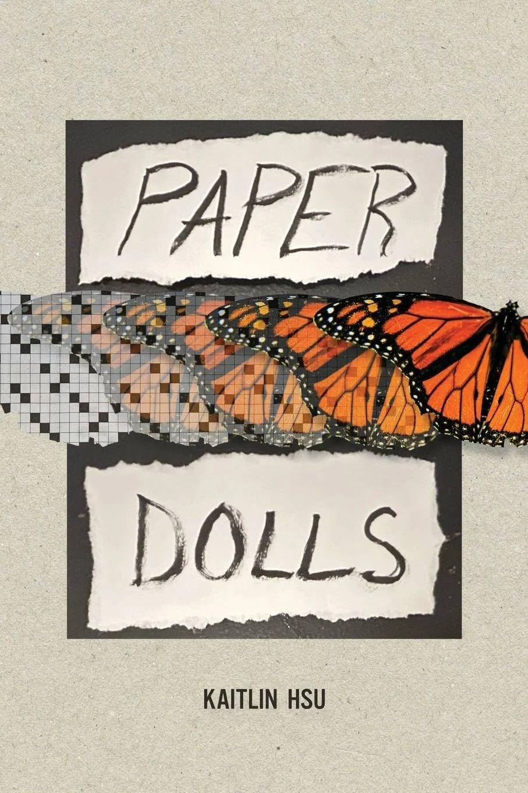

[ home | paper dolls | writing | editing | development | events ]

"Kaitlin Hsu designs a rich, multi-layered, complex, and inventive debut. It is an absolute journey traversing space, puzzles, language, and borders with a conversational dexterity that upends intergenerational reflections and what it means to be Queer and Chinese. Analytical and rigorous, these poems propel storytelling in constant motion. Hsu’s poetic visuals alone are absorbing. Hsu composes motifs of pop culture, culinary traditions, pastorals, family patterns, womanhood, grief, humor, and intimacy, with a dynamic, singular artistry. The range of style and story steers readers into a dizzying pirouette in the best way possible. The level of play and voyaging challenges norms and power in ways that feel refreshing. Paper Dolls will leave you with more questions, more aches, more pathways, and more generative possibilities than your imagination thought possible!"
—Kay Ulanday Barrett